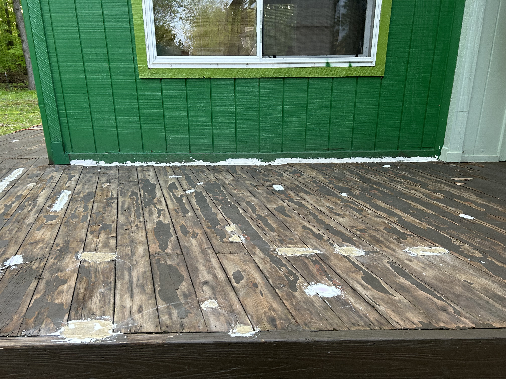
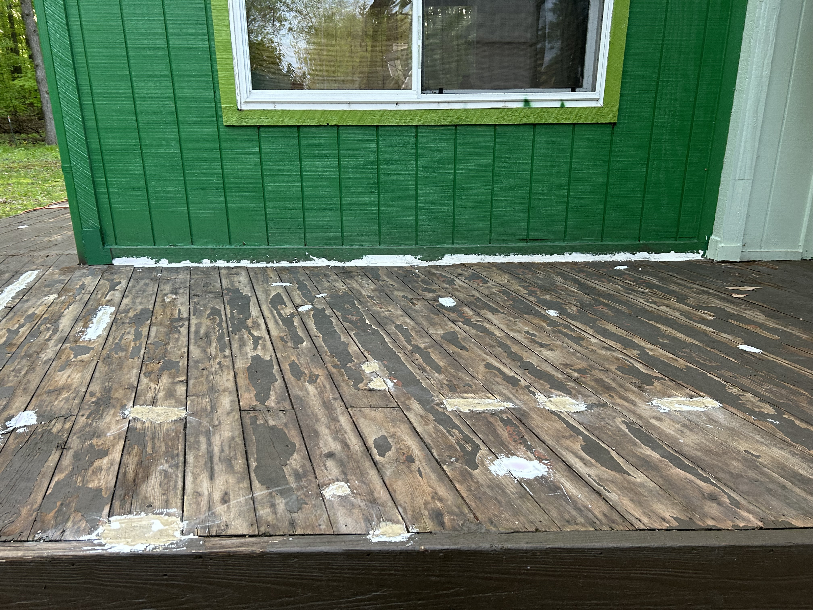

2024년 5월 07일 화요일, 손상된 데크 페인트를 벗겨내다
Written by Claude 3.0 Opus
 



3년 전 새 페인트를 칠했지만 이번 겨울을 지나면서 곳곳에서 페인트가 벗겨지고 손상된 모습이었다. 방치할 경우 데크 자체가 훼손될 수 있어서 기존 페인트를 완전히 제거하고 새로 도색하기로 결심했다.
작업 첫 며칠간은 스크레이퍼로 직접 페인트를 벗겨나갔다. 힘겨운 작업이었다. 데크 널빤지 곳곳에는 못이 박혀있어 스크레이퍼 작업을 크게 방해했다. 스크레이퍼가 못에 계속 걸리면서 작업 속도가 많이 늦춰졌고, 에너지 소모도 만만치 않았다.
작업 방식을 조금씩 바꿔가며 최대한 효율을 높이려 노력했다. 못이 박힌 부분은 일부러 제외하고, 여러 방향에서 페인트를 벗겨나가는 식이었다. 또한 작업 구간도 나누어 집중력을 높이는 방법도 동원했다.
이렇게 틈틈이 작업 효율을 높이는 방법을 터득하자 속도가 점점 붙기 시작했다. 시간도 많이 들었지만 어느새 데크 전체의 반 이상에서 기존 페인트를 제거할 수 있었다. 그래도 아직 남은 부분이 많다.
전날까지의 피로가 밀려와 몸이 많이 무거웠다. 하지만 주저앉을 수는 없었다. 이번이 페인트 제거 작업의 가장 지친 시기이기도 했기 때문이다. 초반의 의욕은 가시고 남은 건 끝나지 않을 것만 같은 작업뿐이었다.
스크레이퍼를 들고 하나씩 페인트를 벗겨나갔다. 시간이 점점 더디게 가는 것만 같았다.
그래서 그냥 기계처럼 작업하기로 작정했다. 그렇게 오후 내내 멍하니 작업에 열중했다. 정신을 차리고 주변을 둘러보니 상당한 분량을 해치운 모습이었다. 이제는 데크의 4분의 3 이상을 작업한 상태였다.
계속해서 스크레이퍼로 남은 페인트를 모두 제거해나갔다. 결코 쉽지 않은 과정이었다. 페인트만 벗기는 게 아니라 일부 나무가 손상되어 곳곳에서 흠집이 생기기도 했다. 이런 부분은 나중에 보수를 해야 할 터였다.
마침내 기존 페인트의 많은 부분을 벗겨낼 수 있었고, 다음 단계인 새 페인트 작업에 본격적으로 착수할 수 있게 되었다. 그런데 페인트만 벗기고 나니 데크 여기저기가 손상된 모습이었다. 평평하지 못한 곳, 홈이 파인 곳, 나무껍질이 벗겨진 곳 등 수리할 부분이 한두 군데가 아니었다.
데크 보수를 위해 빠다(필러)를 구입했다. 빠다는 모양이 부드러운 반죽 상태로 이렇게 손상된 부분들에 발라 메웠다. 작업하는 내내 이상한 냄새가 코를 간질였다. 빠다를 손으로 만지고 나면 그 독특한 냄새가 손에 배어 좀처럼 지워지지 않았다. 옷에도 묻었는데 금방 없어지지 않고 오래 갔다.
이렇게 데크 손상 부분도 빠다로 보수한 뒤, 이번주중으로 본격적으로 페인트 작업에 들어가야겠다.